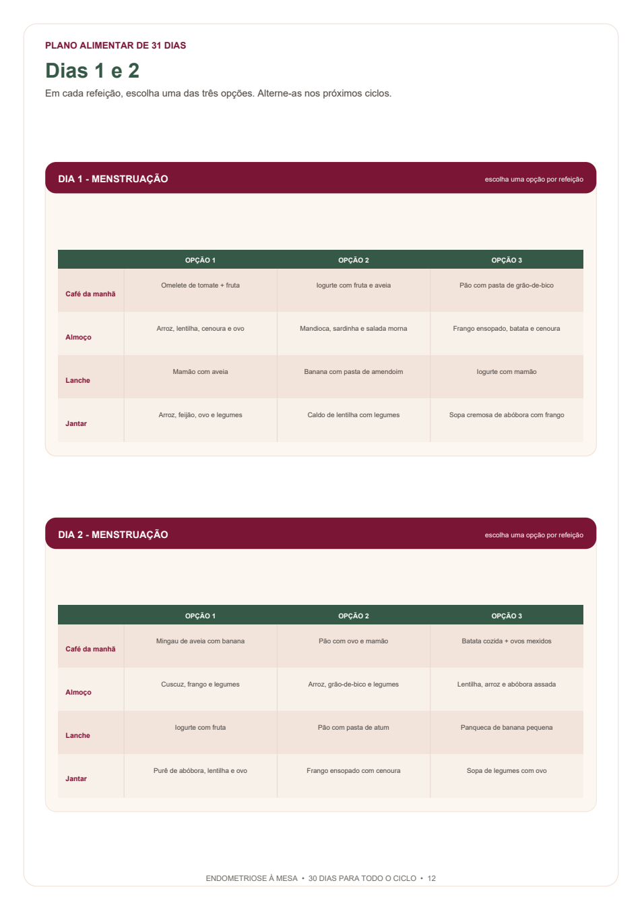
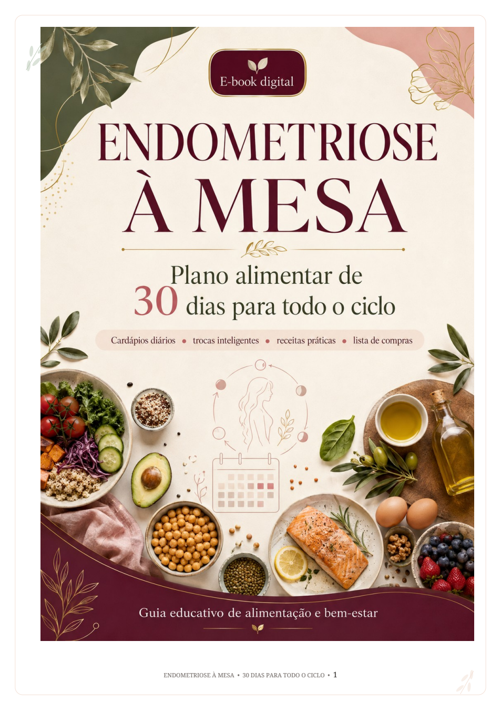
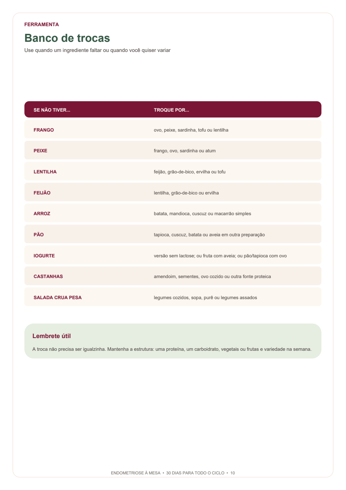
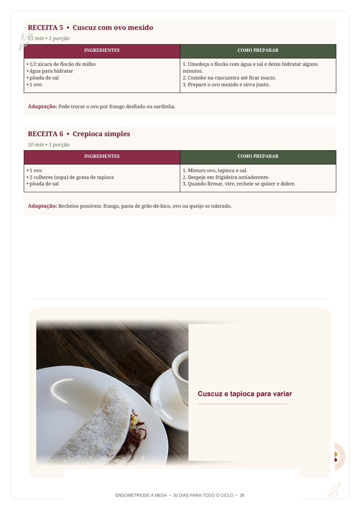
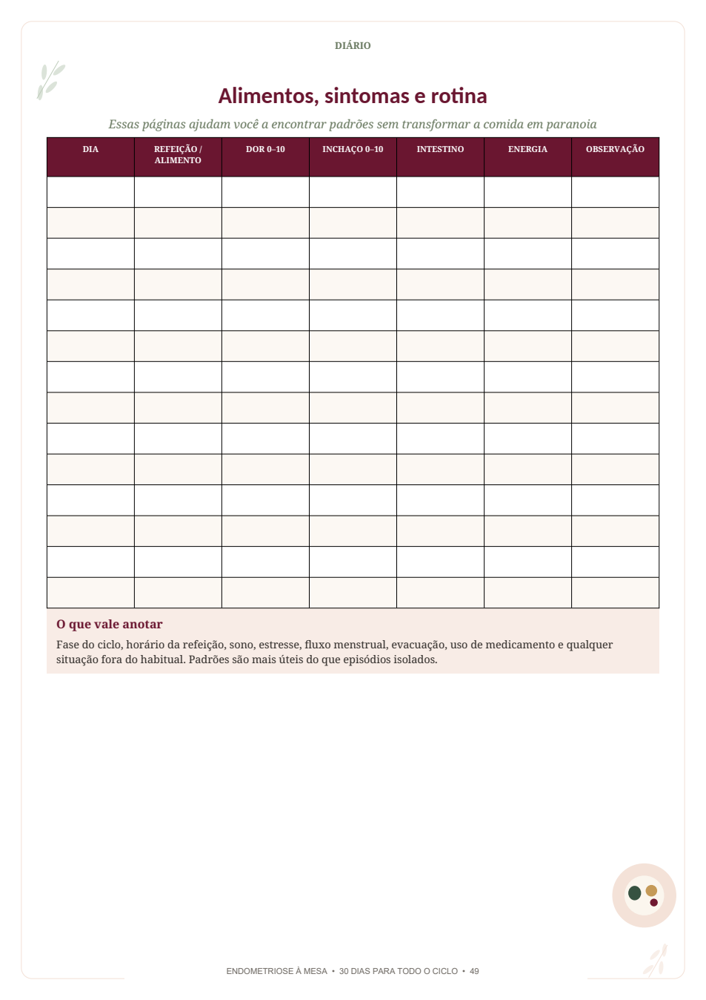

Escolha uma opção
Café da manhã, almoço, lanche e jantar têm três sugestões. Você escolhe uma por vez.
GUIA DIGITAL PARA O MÊS TODO
O Endometriose à Mesa reúne um plano de 30 dias, com continuidade opcional para o Dia 31, três opções em cada refeição, receitas simples, banco de trocas e ferramentas para adaptar o guia à sua rotina.
Acesso digital após a confirmação do pagamento.


✦ páginas reais do e-book
Este não é um cardápio para seguir no automático. É uma estrutura para olhar o dia, escolher uma opção e adaptar quando algum ingrediente faltar ou quando a sua tolerância mudar.
Entenda como o plano funciona →Café da manhã, almoço, lanche e jantar têm três sugestões. Você escolhe uma por vez.
Repita o que se encaixar no seu dia ou experimente outra combinação quando quiser variar.
Se faltar um ingrediente, o Banco de Trocas mostra caminhos para manter a estrutura da refeição.
NÃO É SÓ UMA CAPA BONITA
O e-book foi montado para ser aberto na hora de planejar, cozinhar, trocar um ingrediente ou voltar a uma receita que já funcionou na sua casa.



COMO USAR O GUIA
Em cada dia, você vê café da manhã, almoço, lanche e jantar. Cada refeição vem com três sugestões: escolha uma, alterne nas semanas seguintes e use o Banco de Trocas quando precisar.
O Dia 31 é opcional: use para continuar, repetir a combinação que funcionou ou retomar o plano.
Veja as quatro refeições e as alternativas daquele momento do ciclo.
Escolha uma opção por refeição. Se faltar algo, consulte o Banco de Trocas.
Use as receitas, a lista e o diário como apoio para organizar a próxima semana.
O QUE VOCÊ RECEBE
30 dias organizados por fases do ciclo, com continuidade opcional para o Dia 31.
Café, almoço, lanche e jantar com alternativas para escolher uma por vez.
Trocas claras para frango, peixe, arroz, feijão, pão e outros ingredientes do dia a dia.
Preparos como omeletes, sopas, cuscuz, lentilhas, mingaus, tapiocas e mais.
Lista de compras, ideias para congelar e bases para deixar prontas quando houver disposição.
Páginas para registrar alimento, rotina e sintomas, além de uma lista prática para consultar.
Orientações práticas do próprio guia para inchaço abdominal, intestino sensível, náusea, pouco apetite e pouca energia.
Explicações diretas sobre o uso do material e referências reunidas ao final.
RECEITAS PARA VOLTAR QUANDO FALTAR IDEIA
Do ovo com tomate à sopa cremosa de abóbora, do mingau de aveia à lentilha com tomate: são 28 preparos com passos objetivos e adaptações indicadas no próprio material.
ACESSO DIGITAL
Tenha em um só material o plano, as receitas, as trocas, a lista de compras, a organização da semana e o diário de observação.
PERGUNTAS FREQUENTES
Não. Em cada refeição há três alternativas. A proposta é escolher a que cabe no seu dia e usar o material como estrutura.
O guia inclui um Dia 31 opcional. Você pode usá-lo para continuar, repetir combinações ou retomar o plano.
Use o Banco de Trocas. Ele apresenta alternativas por categoria para manter a estrutura da refeição.
Não. As receitas são pontos de partida. Você pode repetir as que funcionam na sua rotina e adaptar porções à sua casa.
O material explica que é uma estratégia temporária de redução de alguns carboidratos que fermentam mais no intestino, individual e preferencialmente acompanhada por nutricionista.